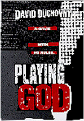
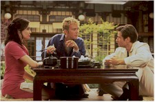
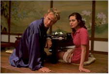
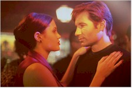

Contents | Features | Reviews | News | Archives | Store |
 |
|
| Movie Credits | Buy It! |
Playing God
Review by Eddie Cockrell
Posted 17 October 1997
|  | Directed by Andy Wilson Starring
David Duchovny, Timothy Hutton, Screenplay by Mark Haskell Smith |
"Sometimes we all wonder how things come to be," muses David Duchovny as disbarred doctor Eugene Sands in voiceover near the beginning of this laconic yet insolent film noir update, and now the legions of "X-Files" fans know what he did last summer: Playing God isn't the kind of high-profile prestige project that might be expected from the star of Fox Television's wildly popular phenomenon (get the calendar! Collect the cocktail napkins!), but while some might wonder exactly how this thing came to be, it isn't unexpected, either – or entirely without precedent. Neither an embarrassing misfire or a completely successful against-the-grain gamble, this nasty but stylish item seems to display an actor anxious to remind people that he can be a film actor – and that here is life beyond Mulder.
Sands had his license taken away for operating on and losing a patient while high on synthetic heroin (fennel citrate? Cennel fitrate? Something like this), and while scoring a new batch in a seedy Los Angeles club he saves the life of a "special friend" of excitable smuggler Raymond Blossom (Timothy Hutton) by improvising a nifty tube system to drain the victim's collapsed lung with the help of Ray's squeeze Claire (Angelina Jolie). Blossom is so impressed by Claire's account of this bit of spontaneous meatball surgery that he pays Eugene ten large in gratitude, and then hits on the idea to keep the doctor around on retainer when one of his goons accidentally shoots potential partner Vladimir (Peter Stormare) and traditional medical care is just out of the question.
But Sands hasn't lost his morals, only his license, and is thus reluctant to take the easy money – well, easy for a doctor, anyway. But them some FBI guys show up, led by the asthmatic Agent Gage (Michael Massee), and there turns out to be more to Claire than meets the eye. Before you can say fennel citrate the good doctor is up to his elbows in double crosses.
At a trim 93 minutes, Playing God is strongly reminiscent of such recent genre retreads as 1996's 2 Days in the Valley (also featuring Hutton in his newly-conjured hood persona), 1997's Hard Eight and City of Industry and all those other small films noir that fly just under the radar, casualties of the Hollywood product glut and prevailing winds of the marketplace. On the surface, Playing God isn't much different, mixing tough-guy posturing with hardboiled dialogue and combustible, often bloody situations.
What sets the film up for closer scrutiny is, of course, the presence of Duchovny, who now seems intent on distancing himself as far from the whole "X-Files" thing as is humanly possible (never Mr. Sunshine in interview situations, he sounded particularly dour when at least one camera crew caught up with him recently on the set of the "X-Files" movie, due next summer).
And who can blame him? Television is both a blessing and a curse, conferring fame upon a chosen few but branding those same few for life with associations that may prove more of a hindrance than a help. Some break out of it, either because they can adapt to the very different demands of acting on the big screen or because they refuse to remain typecast no matter how much of a stretch their movie roles might be (Patrick Stewart and Pierce Brosnan spring to mind as a examples of both paths well taken, while Tom Selleck might serve as a cautionary reminder that charisma doesn't automatically transfer from cathode ray tube to projector).
Seen in this light, Duchovny can be applauded for staying in character, sort of. While Eugene Sands has the same world-weary irony of Fox Mulder, he's also a more extreme loser ("always on the lookout for a new way to fuck up," as Claire describes him), albeit one with a bloodied but unbowed conscious ("you do what good you can and pass it on," he explains). Besides, with a pre-"Files" career that consisted of a lot of undistinguished work (in the likes of Kalifornia, Ruby, Chaplin, Don't Tell Mom the Babysitter's Dead, The Rapture) and an ongoing gig on the execrable "Red Shoe Diaries," his relief at landing the (now) plum role of Mulder might be giving way to panic at the thought of doing knock-offs and conventions for the rest of his career ("I think that's the trend right now," he told one interviewer recently by way of explaining his selection of this script over the numerous sci-fi movies sent his way, "so I try not to be insulted.").
On other fronts, the film isn't without it's slightly stoned humor: an impromptu operation on the bar of Jim and Sue's Sierra Inn (great character actor Tracey Walter is seen all-too-briefly); one lowlife's lecture on the difference between Russians and Estonians; and a climactic car chase so self-conscious that Raymond actually screams "This is a car chase! I went to considerable expense to set this up – I can't just stop!"; and Sands assault on – and later impersonation of – an FBI agent (shades of Mulder).
Hutton brings a jittery desperation to Raymond that doesn't jibe with the traditional post-modern heavy but serves to make him a little more stupid and thus human, while Angelina Jolie's Claire is yet another overripe male figment of the femme fatale (that she takes a bullet to the chest and is seemingly up and around only days later may be a tribute to the gender's toughness but could also just be lazy filmmaking). Of the virtually unknown supporting cast only Michael Massee registers a lasting impression as a kind of overcaffeinated civil servant, delivering a nicely eccentric performance that lifts his bumbling FBI suit out of cliche into something a little more memorable.
While sophomore screenwriter Mark Haskell Smith's script clearly appreciates the Chandleresque milieu of southern California and the moral squalor under all that sun, that aforementioned self-consciousness does occasionally seep in. First-time feature director Andy Wilson (he operated the camera on that recent TV remake of Truman Capote's "In Cold Blood") also has acting stints in Peter Greenaway's 1989 drama The Cook, the Thief, His Wife & Her Lover ("1st Diner") and Herschell Gordon Lewis' 1964 gore-fest Two Thousand Maniacs ("The Policeman") on his electronic resume, and if its the same guy it could go a long way towards explaining the jagged flashes of gore in Playing God. The movie's one true link to greatness is it's cinematographer, the great Anthony B. Richmond, who shot the TV version of "Heart of Darkness," Bad Timing: A Sensual Obsession, The Man Who Fell to Earth and the immortally creepy Don't Look Now for cameraman-turned-director Nicolas Roeg (his other credits include The Indian Runner, Candyman and Bastard Out of Carolina). Together Richmond and Wilson have cooked up an intriguing look for Playing God, a sort of jagged, angular paradise that nicely underscores and contrasts the mess people can make of other people's bodies. The movie doesn't help itself one bit by tricking everyone out in the most godawful 1970s fashions, although the music, which features Morcheeba and other similar bands doing original compositions as well as a sort of undead cover of Nancy Sinatra's "These Boots Are Made for Walkin'," is provocative but has about as much shelf life as those clothes.
To be "a slave in heaven or a star in hell," broods Sands: "Hell doesn't always look like hell... On a good day it can look a lot like Los Angeles." And later, to Gage: "Whattaya gonna do, arrest me for failing to live up to my potential?" For those inclined to wonder how things come to be, Eugene Sands isn't too far from where Duchovny might be right about now, which may go a long way towards explaining the existence of Playing God, if not the reason for it.
Contents | Features | Reviews | News | Archives | Store
Copyright © 1999 by Nitrate Productions, Inc. All Rights Reserved.